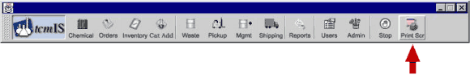
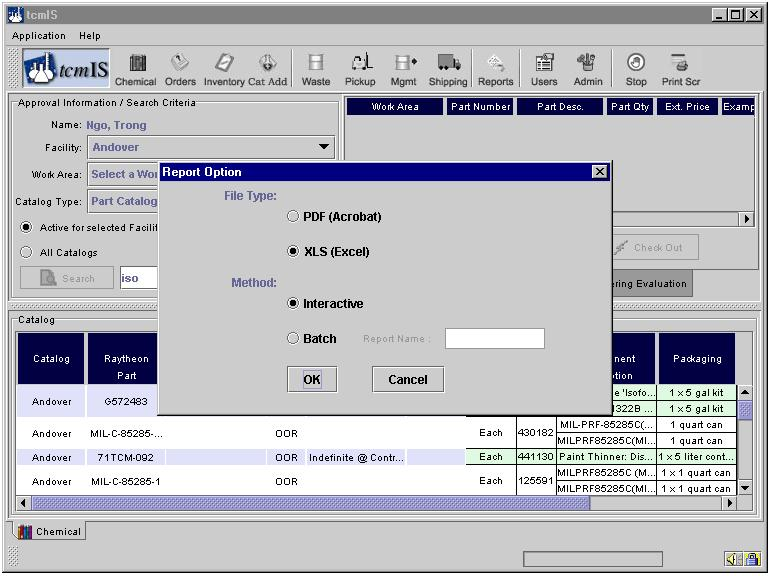

You can use this utility by clicking on the button named "Print Scr" as shown below.

You can use this button on most screens to generate a printable report based on the information on that screen. This is a convenient way of screen capture.
When you press the print screen button you are provided with two choices as show.

You can generate the report in either PDF format, which you can not edit, or a CSV format, which you can open in MS-Excel and edit. You can also choose between getting the report right away by choosing the interactive option or you can choose to pickup your report later by choosing the Batch option.
In the "Interactive" option the report is displayed in a browser immediately after you press ok. For "Batch" method an email is sent to you informing about the status of your report which you can pickup at your convenience.
Mostly all the reports are kept on our servers for about two weeks. If you want to keep a permanent record of the reports you generated it is suggested to save the report locally on your computer.